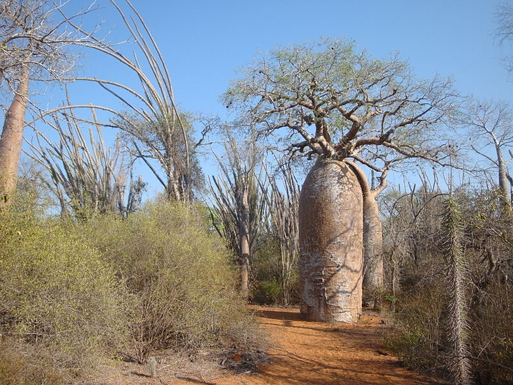
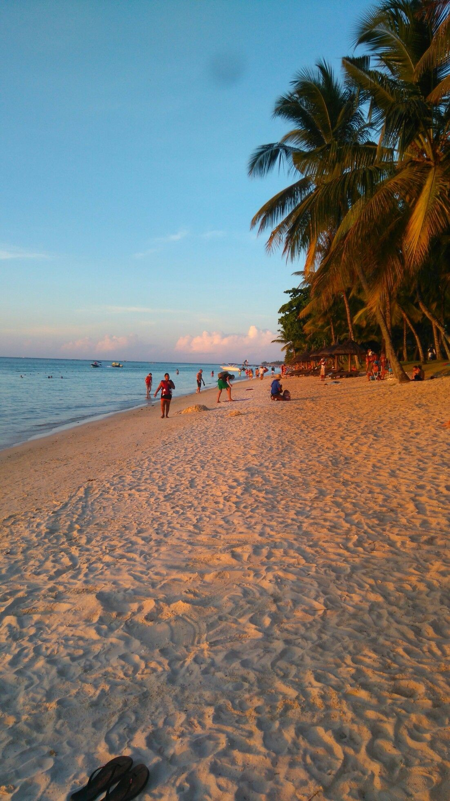
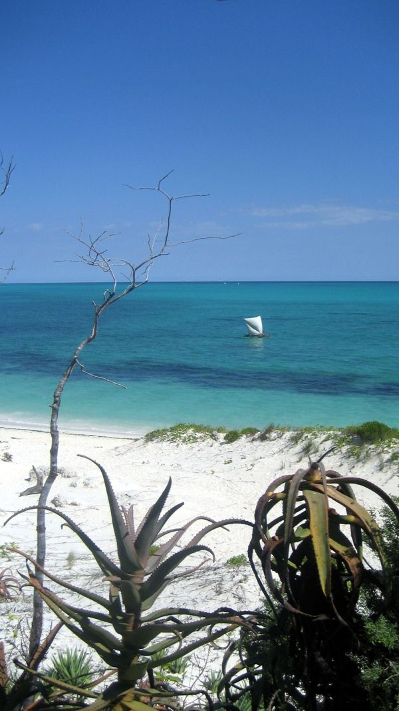
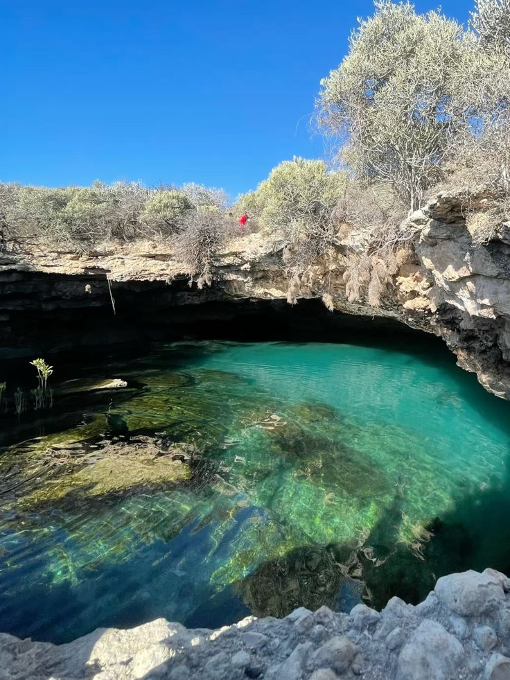

VISIT
À TULEAR
À Madagascar il y a six (06)
provinces, dont TULEAR.
Tuléar se trouve au sud-ouest de Madagascar.
Lieux populaires à Tuléar

✔ Parc National de Tsimanampetsotsa : À environ 2h30-3h au sud de Toliara, ce parc abrite un grand lac salé, des grottes, des flamants roses et le fascinant baobab "Tsitakakantsa".

✔ Ifaty et Mangily : À environ 30 km au nord de Toliara, ces villages de pêcheurs sont réputés pour leur lagon turquoise, leurs spots de plongée, la réserve Reniala (réputée pour sa forêt de baobabs et ses lémuriens) et le kitesurf.

✔ Anakao : Un village de pêcheurs Vezo authentique situé au sud de Tuléar, accessible en bateau rapide (comme avec Anakao Express). Le site est mondialement connu pour ses eaux cristallines, sa tranquillité et la proximité de l'île de Nosy Ve, sanctuaire des Phaétons à queue rouge.

✔ La Grotte de Sarodrano est l'une des attractions naturelles les plus célèbres de la région de Toliara. Située à environ 15 kilomètres au sud de la ville, sur la route menant à Saint-Augustin, elle abrite une piscine naturelle d'eau douce souterraine à seulement quelques mètres de la mer.